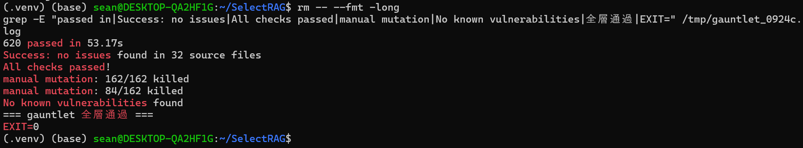
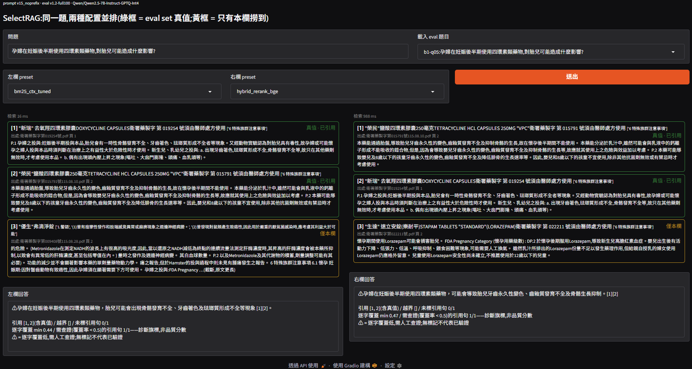
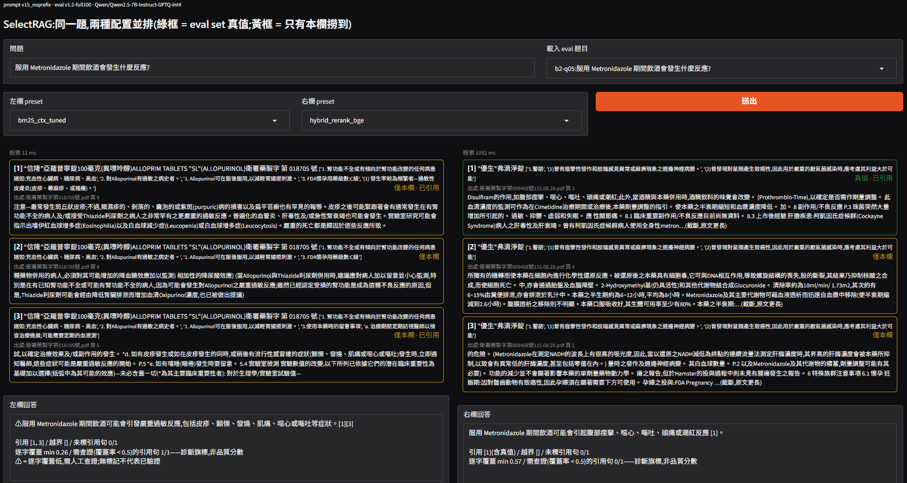
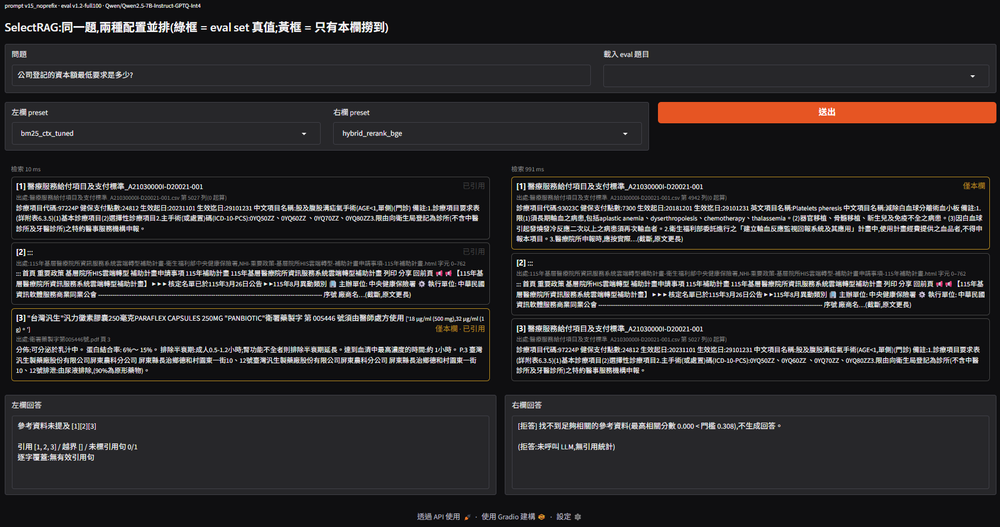
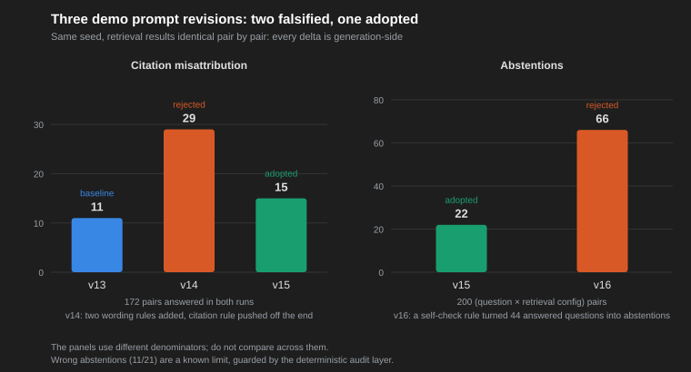
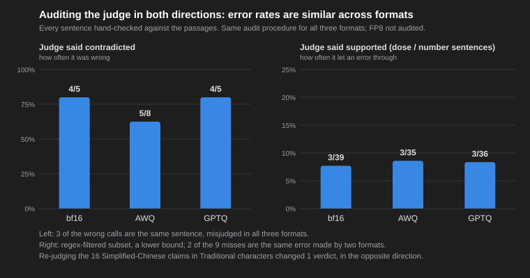

English ｜ 繁體中文
A Controlled-Experiment Answer to "Which RAG Configuration Should We Use?" on a Single RTX 4090
Simulating the question Solutions Architects hear most often — "which RAG configuration should we use?" — answered with controlled experiments on a single consumer GPU: one axis moves at a time, everything else pinned. The final deliverable is an architecture decision memo, itself in the format an SA would ship.
This project does not chase leaderboard scores; it builds a selection methodology — every "should we adopt X?" question gets a controlled experiment, and every conclusion is written as a trade-off, not a champion. Three pillars:
hit == (recall > 0); the metrics module is mutation-tested (45/45 killed).
Government documents (PDF / CSV / HTML)
│ structure-first chunking + doc_title backfill
▼
8,029 chunks (JSONL)
│
▼
Axis A Retrieval: BM25 / bge-m3 / RRF hybrid / + bge-reranker-v2-m3
│ reranker score threshold → abstain without calling the LLM
▼
Axis B/C Generation: vLLM or TensorRT-LLM × bf16 / FP8 / AWQ / GPTQ-Int4
│ (Qwen2.5-7B-Instruct, single RTX 4090)
▼
Scoring: frozen 100-question eval set (recall@k / hit@k / MRR)
+ Qwen2.5-14B faithfulness judge + deterministic audit layer
| Category | Stack |
|---|---|
| Retrieval | BM25 (stdlib-only, CJK bigram + ASCII tokenization), bge-m3 dense, RRF hybrid, bge-reranker-v2-m3; NVIDIA NIM reranker evaluated |
| Inference | vLLM 0.22.1, TensorRT-LLM 1.2.1, Qwen2.5-7B-Instruct (bf16 / FP8 / AWQ / GPTQ-Int4), NVIDIA ModelOpt (FP8 calibration) |
| Judge | Local Qwen2.5-14B faithfulness judge (structured outputs), hand-audited in both directions |
| Demo | Gradio two-column comparison |
| Corpus pipeline | pypdf (pinned 6.16.2), custom HTML main-content extraction, dual Chinese heading-scheme parser, NFKC normalization |
| Evaluation | Frozen eval set (content hash + fail-loud bad-data policy), recall@k / hit@k / MRR, one-command reruns |
| Quality engineering | pytest + hypothesis (property-based), mypy strict, ruff, 162-anchor mutation testing (with property-only subset runs), pip-audit; single entry tools/gauntlet.sh |
| Hardware | Single RTX 4090 (GPU axes) + cloud CPU (corpus, baselines, tuning); Python 3.11, pinned pip deps |

| Axis | Recommended | Key numbers | Boring but safe |
|---|---|---|---|
| A Retrieval | hybrid (BM25 + bge-m3, RRF) + bge-reranker-v2-m3 | recall@10 0.903 → 0.973, recall@3 0.808 → 0.941; cost: 13 ms → 1501 ms per query when retrieval shares the GPU with generation | tuned BM25 with document context: no GPU, 13 ms per query, recall@10 0.903 |
| B Engine | do FP8 first, argue about engines later | vLLM vs TensorRT-LLM within 10%; FP8 ×1.4–1.7 | vLLM bf16: one pip install, no conversion |
| C Format | vLLM + GPTQ-Int4 (official pre-quantized) | throughput ×2.36 (1000 vs 424 tok/s), 5.3 GiB weights, faithfulness indistinguishable from bf16 under the judge | vLLM bf16 |
Stacked: "hybrid + reranker retrieval, vLLM serving GPTQ-Int4" is the single-card answer. Versus the safe configuration it costs one vector index, one cross-encoder and one quantized checkpoint, and buys +0.13 top-3 recall and ×2.4 generation throughput.
| Format | Source / kernel | Weights GiB | KV cache tokens | c=1 latency p50 / p95 | c=8 tok/s | long output c=8 tok/s | vs bf16 (c=8) |
|---|---|---|---|---|---|---|---|
| bf16 | official @ a09a3545 | 14.29 | 113,488 | 0.73 / 1.28 s | 424 | 406 | ×1.00 |
| FP8 | ModelOpt self-calibrated, 512 | 8.17 | 223,632 | 0.52 / 1.00 | 610 | 614 | ×1.44 |
| AWQ (W4A16) | official @ b250375, awq_marlin | 5.29 | 273,808 | 0.32 / 0.56 | 1000 | 915 | ×2.36 |
| GPTQ-Int4 | official @ e9c932ac, gptq→marlin | 5.27 | 274,224 | 0.34 / 0.58 | 1000 | 920 | ×2.36 |
Axis C: same 4090, same 100 prompts, four numeric formats under vLLM — throughput, latency, weights and KV-cache capacity. W4A16 (AWQ / GPTQ) is the largest single speed-up in the project.
| Quality / agreement vs vLLM bf16 | bf16 | FP8 | AWQ | GPTQ |
|---|---|---|---|---|
| faithfulness (judge v2) | 0.959 (121) | 0.951 (122) | 0.938 (129) | 0.960 (125) |
| contradicted | 0.041 | 0.049 | 0.062 | 0.040 |
| abstentions (of 100) | 3 | 3 | 1 | 3 |
| verbatim agreement with bf16 | — | 0.51 | 0.27 | 0.25 |
| answers with Simplified chars / max share | 2 / 0.032 | 1 / 0.167 | 9 / 0.227 | 6 / 0.133 |
Axis C quality table: faithfulness, abstentions, verbatim agreement with bf16, and simplified-character ratio (language drift, amplified 3–4.5× by W4).
A Gradio two-column UI: pick a retrieval preset per column, ask one question, and see each column's top-3 chunks next to a streamed vLLM (GPTQ-Int4) answer. Green frames are human-labelled ground truth from the eval set; yellow frames are chunks only that column retrieved. The pure logic sits under the gauntlet (6 mutation anchors); the UI layer is verified by a real --check run. All three models share one card at 23.9 / 24.6 GiB VRAM.

b1-q05: both columns hit the ground truth in their top-2 in opposite order; the third slot pulls a different document in each (yellow).
Two guardrails. (1) Citations: the prompt requires a [passage number] per sentence and a deterministic layer checks valid / out-of-range / hits-ground-truth — 100 questions × 2 presets: 100% compliance, zero out-of-range, and when the truth is in the top-3 both presets cite it 0.90 of the time. But a valid number is not evidence: a second layer scores each sentence's character 3-gram coverage against the passage it cites, and hand-reviewing all 23 low-coverage sentences showed coverage cannot serve as a quality score — a 0.00 sentence was a faithful paraphrase, while 0.351 was the wrong drug entirely and 0.484 inverted a causal claim. It stays as a "check this sentence" flag only. The real number: 11 of 74 cited sentences have no support in the passage they cite, and that is a lower bound (only the low-coverage subset was reviewed). Both retrieval presets fabricate at the same rate — better retrieval does not make generation faithful. (2) Abstention: if the reranker's top-1 score is below a threshold the LLM is never called. The threshold came from a grid over 100 eval + 60 off-corpus questions (19 of them deliberate lures): on the reranker side everything off-corpus abstains at 0.103 and above, with a plateau 0.03–0.59, midpoint 0.308. To answer "does this threshold only hold for these 100 questions?", a 5-fold cross-validation: all five folds pick the same threshold (0.3076), held-out false-abstain 0.010, true-abstain 1.000, no fold without a plateau. BM25 goes the other way — with 60 off-corpus questions its plateau disappears entirely, and three of five folds find no threshold at all (mean true-abstain 0.383). "The boring, safe config has no calibratable confidence" is therefore measured, not asserted.

b2-q05 (Metronidazole and alcohol): all three BM25 passages on the left are Allopurinol leaflets (drug-name blindness), yet the model still writes a sentence about an alcohol reaction and cites [1][3] — another drug's side effects transplanted. Verbatim coverage 0.26 < 0.5, so the sentence gets a ⚠ prefix; the hybrid column retrieves the ground truth, covers 0.57 and is unmarked. The footer's "diagnostic flag, not a quality score" is a fixed disclaimer: coverage only says "check this sentence", and no mark does not mean verified.

Off-corpus question: the right column (reranker 0.000 < 0.308) abstains with zero LLM calls; the left column (BM25) retrieves three unrelated clauses and the model falls back on the prompt rule, answering "not in the reference" while still citing. Known limit: for wrong-but-semantically-close retrievals the reranker is just as confident (2 of 3 such questions score > 0.85) — a threshold cannot catch those.
On top of coverage and citation checks sits a layer of deterministic audit tools (none of them feed any score — they only surface suspect rows for human review): (1) required-component hits — multi-part questions (an answer split across two codes, a point value plus a materials clause) are checked against a human-approved component list (16 questions, 36 components), with forbidden phrasings split into a protective kind (a wrong dosage phrasing that spuriously satisfies a component) and a punitive kind (the whole answer is about the wrong drug — the entire question scores zero); (2) abstention visibility — abstention sentences used to be silently skipped by sentence-level analysis, erasing 20–30 (question × retrieval) pairs per run from the sheet; adding an abstention row type plus a "best truth rank" column measured that 11 of 21 abstentions were wrong — the correct passage was inside the context the model itself cited; (3) drug-name verbatim check — the quantized model occasionally rewrites a Latin drug name into a non-existent Chinese string (character-level drift), caught deterministically by flagging Latin terms present in the cited passage but absent from the sentence.
The audit layer then measured the prompt itself — three revisions, two falsified: v14 added two wording rules at once; meta-preambles went to zero but citation misattribution jumped 11→29 (the citation rule got pushed off the end of the system prompt). v15 kept a single formatting constraint and put the citation rule back last; misattribution fell to 15 — adopted. v16 added a self-check rule ("never claim the passage doesn't mention it"); 44 previously well-answered questions flipped to abstention — for a 7B quantized model this kind of meta-instruction acts as string priming, not behavioural checking. The distilled conclusion: prompt rules can constrain output format; they cannot add checking behaviour.

Same seed, retrieval results verified identical pair by pair — every delta is generation-side. The two panels use different denominators and must not be compared across.
The judge itself was audited too. The C-axis claim that quantization does not cost quality rests on a 14B judge's faithfulness scores. Using that judge to compare formats assumes its errors are the same size for every format. That started as an assumption. We then measured it by hand-auditing both directions. The first direction is how many sentences the judge called contradicted were actually fine. The second is how many wrong dose and number sentences it let through as supported. The results were close for bf16, AWQ and GPTQ. All nine errors it let through have the same shape: every word is in the passage, but the relation is wrong. Examples are per-day swapped with per-dose, and an announcement date given as the start date. One of the nine cuts the daily dose by four. We also re-judged the Simplified-Chinese sentences after converting them to Traditional characters. Only 1 of 16 verdicts changed, and in the opposite direction. That rules out the concern that character drift makes the quantized formats look worse.

Every sentence hand-checked against the passages, same procedure for all three formats; FP8 not audited. The right panel is a regex-filtered subset, so it is a lower bound.
Honest disclosure: (1) all retrieval numbers are upper-bound estimates on the same 100 questions, no held-out split; (2) faithfulness judge κ 0.488 with error types listed (paraphrases marked contradicted, unit swaps let through, neighbouring clauses mis-attributed) — used for relative comparison across formats only; (3) AWQ / GPTQ calibration data is the vendor's, not the corpus used for FP8; (4) NV-Embed-v2 is incompatible with the pinned transformers and TensorRT-LLM cannot load W4 checkpoints — both in the honesty section. (5) 11 of 21 abstentions are wrong (correct passage inside the cited context) — the prompt-level cure was falsified by measurement, so the guard lives in the deterministic audit layer. Memo §7 lists nine "expected to win, lost" combinations.
Not a straight line of successes — a chain of "hypothesis → verify → honest correction". Key nodes:
Error analysis said "the answer's keywords aren't in the chunk body"; the intuitive fix was indexing heading paths. Pre-implementation verification overturned it — the missing drug names weren't in the headings either, only in each document's first line. The redirect to doc_title backfill flipped 2 of 3 targeted misses (plus one bonus); without that check, the experiment arm would have shown no difference at all.
hit@k's three property invariants (≥ recall, monotonicity, binary range) all passed — yet an "always report a hit" mutant survived the property-only mutation run. One-sided bounds can't catch that failure direction; the two-sided lock hit == (recall > 0) killed it.
Truncated previews caused a source chunk to be mis-judged as answer-free; test characters that looked full-width were silently normalized to ASCII somewhere in the input chain, leaving a test vacuous — revealed only by a surviving mutant. Both fixed with full-text verification and escape-sequence literals; the process improved batch over batch.
Two batch-4 questions lost all discriminative power because the corpus repeats clauses verbatim (10 of that batch's 13 annotation diffs). Distilled into a standing rule: before finalizing a question, count the answer sentence's corpus occurrences; >2 → ask for a unique value instead, and verify uniqueness.
The NIM reranker container died with CUDA error 500 on start; the first two-hour time-box concluded "WSL2 environment, not feasible" and stopped. The second time-box found the real cause — an outdated Docker Desktop — and the update fixed it. Time-boxes work, but a stop-loss verdict must stay falsifiable.
The hunch: "if a claim is a verbatim sentence from the passage, mark it supported" would absorb half of the judge's errors. Measuring 3-gram coverage on the calibration sheet first showed number-perturbed negatives still score above 0.7, and a zero-false-positive threshold only catches 1 of 34. Shipped anyway as a zero-false-positive shortcut, demoted from "main fix" to "safety layer".
After stratified calibration cut κ from 0.845 to 0.488, a prompt revision had zero leverage and decomposition flipped only 3 of 8. Rules can fix "didn't check"; they cannot fix "checked and judged wrong". The judge was re-scoped to relative comparison and the error types written as its boundary — instead of hunting for a prettier number.
The "never claim absence" pairing rule was a validated success on a much larger model. Ported verbatim to a 7B quantized model, it flipped 44 previously well-answered questions into abstentions. Proven patterns carry their scope (model scale) with them — and the scope does not move house automatically. The verdict needed no human review: refusing questions it used to answer is a regression whatever the new text says; mechanical comparison settled it and the revert shipped within the hour.